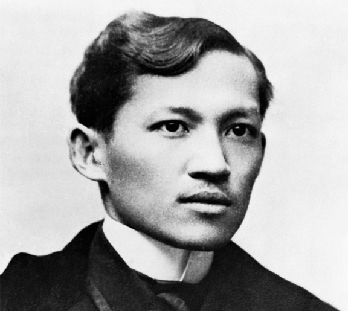

DIVE ON THE LIFE OF A MARTYR'S LIFE. EMERGE AND EMBRACE YOURSELF TO WITNESS RIZAL'S CONFIDENTIAL INFORMATION THAT NO ONE ELSE KNOWS THROUGHOUT HIS TIME FROM 1894 TO 1895, ALL OF THE UNANSWERED QUESTIONS WOULD BE UNWRAPPED HERE.
Jose Rizal

José Rizal, full name José Protasio Rizal Mercado y Alonso Realonda, (born June 19, 1861 in Calamba, Philippines—died December 30, 1896 in Manila) a writer who inspired the Philippine nationalist movement. Rizal took a preparatory course on Law at the University of Santo Tomas. He learned that his mother who’s his first teacher was going blind, so he decided to Shift course to Medicine and later specialized in Ophthalmology. He decided to pursue his career in Madrid, Spain and earned in licensure in Medicine at Universidad Central de Madrid. Apart from being an expert in medicine, Rizal shown other amazing talent. Painting, sketching, and making sculptures. He’s also a polyglot – conversant in 22 languages. Aside from being good in Poetry and creative writing. he has expertise in sociology, anthropology, martial arts and economic.
Rizal’s Life in Dapitan

Rizal erected a mansion near Talisay's beach, complete with a school for boys and a hospital for his patients. He's a doctor, an engineer, an educator, an agriculturist, a businessman, an artist, a linguist, and a community activist.
Rizal supplied free medicine to his patients as a physician. However, he was compensated for his great surgical talents by his rich patients. Don Ignacio Tumarong, one of the affluent patients, gave him 3000 pesos for recovering his sight. Aklanon Haciendero, Don Francisco Azcarraga, who paid him a cargo of sugar.
As an engineer – Rizal obtained the title of expert surveyor (perito agrimensor) from the Ateneo municipal when he was still studying. He put his experience to use in Dapitan, where he built a waterwork system. In the province, he was successful in establishing an excellent water system.
Rizal was an educator who built a school in Dapitan for 16 young boys from important families. He required the children to complete a community service project for him. Reading, writing in English and Spanish, geography, history, mathematics, industrial work, nature studies, morals, and gymnastics were among the subjects he taught them. Classes were held from 2 to 4 p.m.
As an agriculturist, Rizal spent time on his 16-hectare farm growing key crops and fruit-bearing trees. Cacao, coffee, sugarcane, and coconuts were among the crops he cultivated.
As a businessman, Rizal tried his hand at fishing alongside his partner, Ramon Carreon. He highlighted the province's fishing industry's potential. He also requested that two good Calamba fishermen be brought to Dapitan to teach his fishermen the new fishing techniques, which included the use of a large net known as a pukutan.
As an artist, he had volunteered his services to the Charity Sisters. The right foot of the holy virgin, as well as other elements, were modeled by Rizal. He also conceptualizes the curtain, which was oil-painted under his supervision by a sister. He also sculpted the "Mother's Revenge" figurine, which depicted his dog, Syria, avenging her puppy's death at the hands of a crocodile.
As a linguist, Rizal was interested in the languages used in Dapitan, thus, studied and made comparison of the Bisayan and Malayan languages existing in the region.
As a civic worker, He noted the province's bad condition as a civic worker when he first arrived. To get rid of Malaria-carrying insects, he drained the Dapitan wetlands. He installed a lighting system, including coconut oil lamps in unlit streets, and remodeled Dapitan's town plaza.
Rizal and Josephine hosted a Christmas celebration at their home in Talisay on December 25, 1895, little to nothing which was Rizal's last Christmas. Over a steady fire, he cooked a tiny pig to a beautiful brown. He also used a fat fowl to make chicken broth.